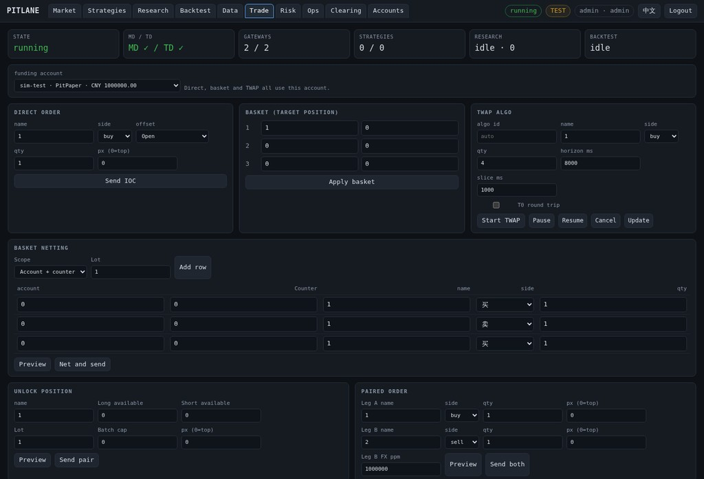
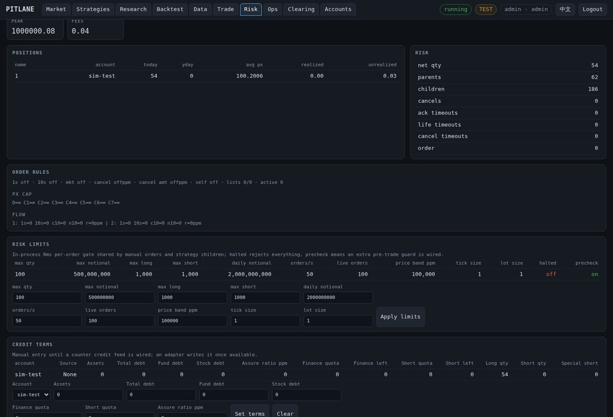

Web console
pitlane_trading --web <port> serves one page that drives every endpoint above. The layout is the same in test and live mode; the mode badge only changes what the page will let you touch. A paper run:

Market data is grouped by product class, with the class, currency, and jump state on each card, and the tape-backed chart below.

Tickets carry a funding account, and every response surfaces the backend message as a toast, so a rejected order shows its reason. The TWAP card names its parent id and can pause, resume, re-size, or cancel that parent after it is accepted, and a T0 flag turns it into a round trip that opens the position and unwinds it back to the entry net. The Trade tab also keeps manual pair packages: create a two-leg package, record per-leg fills, adjust the target, close it, or cancel it, and the book survives a restart.

The Risk tab keeps the alarm banner, the pre-trade limits, the rolling flow counters, and positions across accounts on one screen. It also carries the per-account credit terms table and the manual entry form used until a counter credit feed is wired.

Clearing shows the per-account totals, today/yesterday lots, both valuation bases, the day history, the cash ledger, and the run/settle buttons.